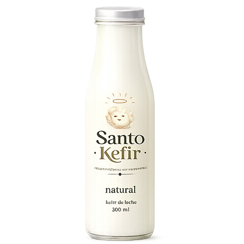
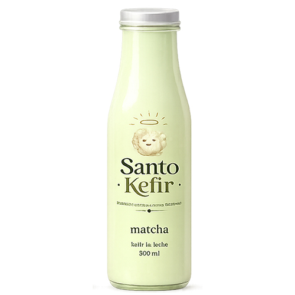
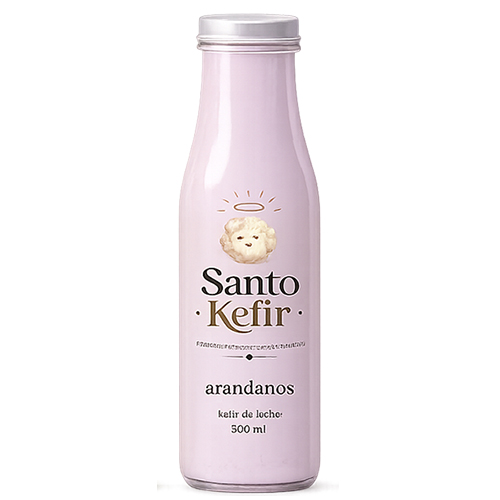
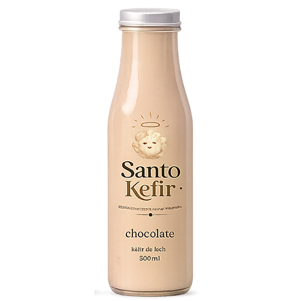
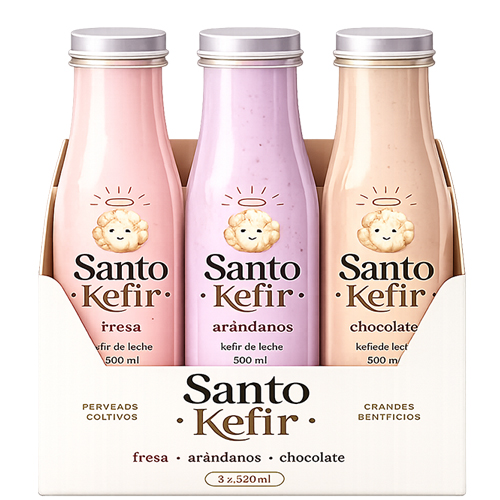
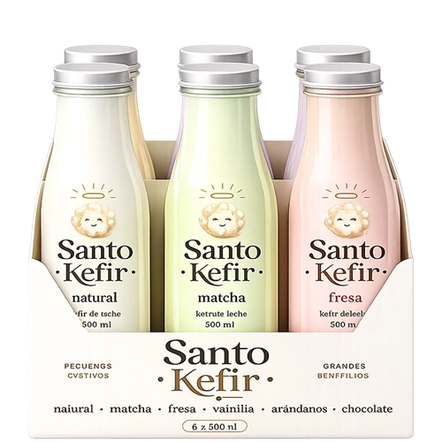

Kefir Natural
Suave, cremoso y ligeramente ácido. El sabor clásico del kéfir para disfrutar solo o combinar como quieras.
Encuentra tu Santo Kéfir favorito.
Un sabor, prueba algo nuevo o llévate varios para descubrirlos todos.

Suave, cremoso y ligeramente ácido. El sabor clásico del kéfir para disfrutar solo o combinar como quieras.

Cremoso y equilibrado, con las notas herbales características del matcha y el toque fresco del kéfir.

Dulce, fresco y frutal. Una combinación cremosa con el sabor irresistible de las fresas.

Suave y aromático, con delicadas notas de vainilla que complementan perfectamente la cremosidad del kéfir.

Fresco y ligeramente dulce, con el sabor intenso y frutal de los arándanos en cada sorbo.

Cremoso y envolvente, con deliciosas notas de cacao para disfrutar el kéfir de una forma diferente.

Tres sabores, una misma experiencia. Elige tus favoritos y disfruta Santo Kéfir en un práctico pack para cada momento.

Más variedad para disfrutar. Seis botellas de Santo Kéfir para descubrir diferentes sabores y tener siempre tu favorito a mano.